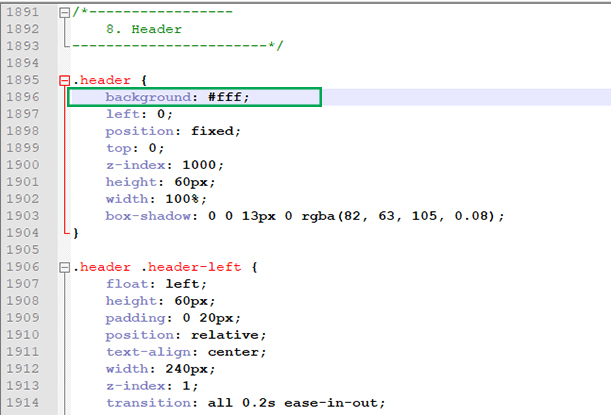

Documentation
EMR - Bootstrap Admin HTML Template
Introduction
- Created on: 2 February 2021
- Developed by: DreamGuy's Technologies
- Support via email: business@dreamguys.co.in
- Support via Themeforest: Take me there
EMR is a well designed fully responsive admin template that makes the web administration process easier than ever. It is equipped with various functionalities and is platform compatible
Installation Guide
- After unzipping Template Files, you will find our product EMR->HTML(Source code), Documentationin the following Main Files folder.
- Open HTML folder, copy all files and paste in your localhost or server root folder. Now you can run this Template in any web browser from your PC or Laptop.
For example:
localhost/EMR/index.html or www.example.com/index.html
Requirements
Working with our EMR product, before going to edit all the HTML, CSS and JS files you will need a text editor.
In this case, we recommended the Sublime Text 3 editor or Notepad++ as it allows you to edit the files efficiently and all the editable files are located in "EMR->HTML" folder.
Browser Support
EMR HTML template is built to work best in the latest desktop and mobile and tablet browsers
- Chrome (latest)
- FireFox (latest)
- Safari (latest)
- Opera (latest)
- Edge
File Structure
Extract the zip file you received after purchase and you would find the exact below files and folders:
EMR/ ├── html/ // All HTML files │ ├── assets/ // All css, js, Image into this folder │ ├── css/ // All css files are here │ ├── fonts/ // All fonts into this folder │ ├── img/ // All images into this folder │ ├── js/ // All js into this folder │ ├── plugins/ // Third party plugins into this folder │ ├── index.html // Main index page │ ├── rest of the html pages // Remaining html pages ├── documentation/ // Documentation files
Html Structure
<!DOCTYPE html>
<html lang="en">
<head>
<meta charset="utf-8">
<meta name="viewport" content="width=device-width, initial-scale=1.0, user-scalable=0">
<title>EMR</title>
<link rel="shortcut icon" href="assets/img/favicon.png">
<link rel="stylesheet" href="assets/css/bootstrap.min.css">
<link rel="stylesheet" href="assets/plugins/fontawesome/css/fontawesome.min.css">
<link rel="stylesheet" href="assets/plugins/fontawesome/css/all.min.css">
<link rel="stylesheet" href="assets/css/feather.css">
<link rel="stylesheet" href="assets/css/style.css">
</head>
<body>
<div class="main-wrapper">
<header>
</header>
<div class="sidebar" id="sidebar">
</div>
<div class="page-wrapper">
<div class="content container-fluid">
</div>
</div>
</div>
<script src="assets/js/jquery-3.5.1.min.js"></script>
<script src="assets/js/popper.min.js"></script>
<script src="assets/plugins/bootstrap/js/bootstrap.min.js"></script>
<script src="assets/plugins/slimscroll/jquery.slimscroll.min.js"></script>
<script src="assets/plugins/apexchart/apexcharts.min.js"></script>
<script src="assets/plugins/apexchart/chart-data.js"></script>
<script src="assets/js/script.js"></script>
</body>
</html>
CSS files and structure
Our external styles files are seperated on css and plugins folders on the assets. Below the example css plugin lists
Styles
<link rel="stylesheet" href="assets/css/bootstrap.min.css">
<link rel="stylesheet" href="assets/plugins/fontawesome/css/fontawesome.min.css">
<link rel="stylesheet" href="assets/plugins/fontawesome/css/all.min.css">
<link rel="stylesheet" href="assets/css/bootstrap-datetimepicker.min.css">
<link rel="stylesheet" href="assets/plugins/datatables/datatables.min.css">
<link rel="stylesheet" href="assets/plugins/jvectormap/jquery-jvectormap-2.0.3.css">
<link rel="stylesheet" href="assets/plugins/select2/css/select2.min.css">
<link rel="stylesheet" href="assets/css/feather.css">
<link rel="stylesheet" href="assets/css/style.css">
We have used this stylesheet for this template. You can customize the style.css
- Bootstrap CSS
- Bootstrap Datetime Picker CSS
- Font Awesome CSS
- Select2 CSS
- Datatables CSS
- Fullcalendar CSS
- jvectormap CSS
- Slimscroll CSS etc...
And our template have its custom CSS files name admin.css which is on css folder of root directory.
Below some code example of admin.css
/*============================ [Table of CSS] 1. General 2. Table 3. Helper Class 4. Bootstrap Classes 5. Select2 6. Nav Tabs 7. Components 8. Header 9. Chat 10. Search 11. Sidebar 12. Inbox 13. Mail View 14. Error 15. Content 16. Login 17. Notifications 18. Dashboard 19. Invoices 20. Toogle 21. Switch Buttons 22. Profile 23. Date Picker 24. Patients 25. Filter 26. Settings 27. Responsive ========================================*/
/*-----------------
1. General
-----------------------*/
@font-face {
font-family: 'CircularStd';
font-style: normal;
font-weight: 400;
src: local('Circular Std Book'), url('../fonts/CircularStd-Book.woff') format('woff');
}
@font-face {
font-family: 'CircularStd';
font-style: italic;
font-weight: 400;
src: local('Circular Std Book Italic'), url('../fonts/CircularStd-BookItalic.woff') format('woff');
}
@font-face {
font-family: 'CircularStd';
font-style: normal;
font-weight: 500;
src: local('Circular Std Medium'), url('../fonts/CircularStd-Medium.woff') format('woff');
}
@font-face {
font-family: 'CircularStd';
font-style: italic;
font-weight: 500;
src: local('Circular Std Medium Italic'), url('../fonts/CircularStd-MediumItalic.woff') format('woff');
}
@font-face {
font-family: 'CircularStd';
font-style: normal;
font-weight: 600;
src: local('Circular Std Bold'), url('../fonts/CircularStd-Bold.woff') format('woff');
}
@font-face {
font-family: 'CircularStd';
font-style: italic;
font-weight: 600;
src: local('Circular Std Bold Italic'), url('../fonts/CircularStd-BoldItalic.woff') format('woff');
}
@font-face {
font-family: 'CircularStd';
font-style: normal;
font-weight: 800;
src: local('Circular Std Black'), url('../fonts/CircularStd-Black.woff') format('woff');
}
@font-face {
font-family: 'CircularStd';
font-style: italic;
font-weight: 800;
src: local('Circular Std Black Italic'), url('../fonts/CircularStd-BlackItalic.woff') format('woff');
}
@font-face {
font-family: 'Material Icons';
font-style: normal;
font-weight: 400;
src: url(../fonts/MaterialIcons-Regular.eot);
/* For IE6-8 */
src: local('Material Icons'), local('MaterialIcons-Regular'), url(../fonts/MaterialIcons-Regular.woff2) format('woff2'), url(../fonts/MaterialIcons-Regular.woff) format('woff'), url(../fonts/MaterialIcons-Regular.ttf) format('truetype');
}
html {
height: 100%;
}
body {
background-color: #f7f8f9;
color: #455560;
font-family: 'CircularStd', sans-serif;
font-size: 0.9375rem;
height: 100%;
line-height: 1.5;
overflow-x: hidden;
}
h1,
h2,
h3,
h4,
h5,
h6 {
font-family: 'CircularStd', sans-serif;
margin-top: 0;
color: #2c3038;
}
a:hover,
a:active,
a:focus {
outline: none;
text-decoration: none;
}
Javascripts
<script src="assets/js/jquery-3.5.1.min.js"></script>
<script src="assets/js/popper.min.js"></script>
<script src="assets/js/bootstrap.min.js"></script>
<script src="assets/js/feather.min.js"></script>
<script src="assets/plugins/slimscroll/jquery.slimscroll.min.js"></script>
<script src="assets/plugins/select2/js/select2.min.js"></script>
<script src="assets/plugins/datatables/datatables.min.js"></script>
<script src="assets/plugins/moment/moment.min.js"></script>
<script src="assets/plugins/fullcalendar/fullcalendar.min.js"></script>
<script src="assets/plugins/fullcalendar/jquery.fullcalendar.js"></script>
<script src="assets/js/script.js"></script>
We have used this javascript for this template. You can customize the scripts.css
File Configuration
How to change Logo ?
You can change the logo or replace it from images folder or you can edit it from HTML file.
<div class="header-left">
<a href="index.html" class="logo">
<img src="assets/img/logo.png" alt="Logo">
</a>
<a href="index.html" class="logo logo-small">
<img src="assets/img/logo-small.png" alt="Logo" width="30" height="30">
</a>
</div>
How to change Header background color ?
You can change the header background color in style.css as per your wish

How to change Theme Font ?
Go to style.css and line number 42 to 97. Here we have the default font family CircularStd
@font-face {
font-family: 'CircularStd';
font-style: normal;
font-weight: 400;
src: local('Circular Std Book'), url('../fonts/CircularStd-Book.woff') format('woff');
}
@font-face {
font-family: 'CircularStd';
font-style: italic;
font-weight: 400;
src: local('Circular Std Book Italic'), url('../fonts/CircularStd-BookItalic.woff') format('woff');
}
@font-face {
font-family: 'CircularStd';
font-style: normal;
font-weight: 500;
src: local('Circular Std Medium'), url('../fonts/CircularStd-Medium.woff') format('woff');
}
@font-face {
font-family: 'CircularStd';
font-style: italic;
font-weight: 500;
src: local('Circular Std Medium Italic'), url('../fonts/CircularStd-MediumItalic.woff') format('woff');
}
@font-face {
font-family: 'CircularStd';
font-style: normal;
font-weight: 600;
src: local('Circular Std Bold'), url('../fonts/CircularStd-Bold.woff') format('woff');
}
@font-face {
font-family: 'CircularStd';
font-style: italic;
font-weight: 600;
src: local('Circular Std Bold Italic'), url('../fonts/CircularStd-BoldItalic.woff') format('woff');
}
@font-face {
font-family: 'CircularStd';
font-style: normal;
font-weight: 800;
src: local('Circular Std Black'), url('../fonts/CircularStd-Black.woff') format('woff');
}
@font-face {
font-family: 'CircularStd';
font-style: italic;
font-weight: 800;
src: local('Circular Std Black Italic'), url('../fonts/CircularStd-BlackItalic.woff') format('woff');
}
@font-face {
font-family: 'Material Icons';
font-style: normal;
font-weight: 400;
src: url(../fonts/MaterialIcons-Regular.eot);
/* For IE6-8 */
src: local('Material Icons'), local('MaterialIcons-Regular'), url(../fonts/MaterialIcons-Regular.woff2) format('woff2'), url(../fonts/MaterialIcons-Regular.woff) format('woff'), url(../fonts/MaterialIcons-Regular.ttf) format('truetype');
}
if you want use google fonts?
Google font must be loaded in HTML Head before other CSS files.
Font code example:
<link href="https://fonts.googleapis.com/css?family=Lato:400,700,900&display=swap" rel="stylesheet">
Our template also uses Material Icons and Fontawesome icons.
Credits
We've used the following resources as listed. These are some awesome creation and we are thankful to the community.
Support
If you have any queries please contact us through email: business@dreamguys.co.in